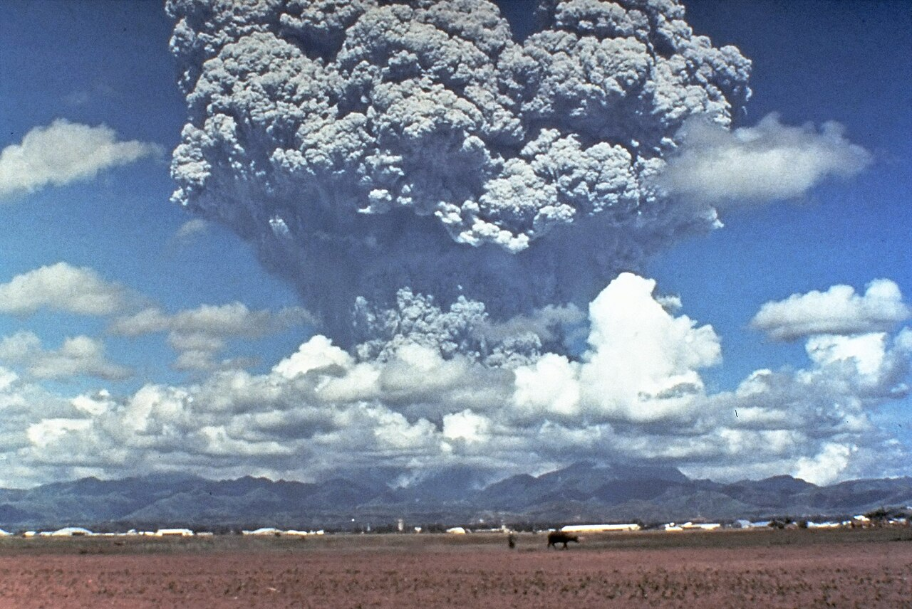
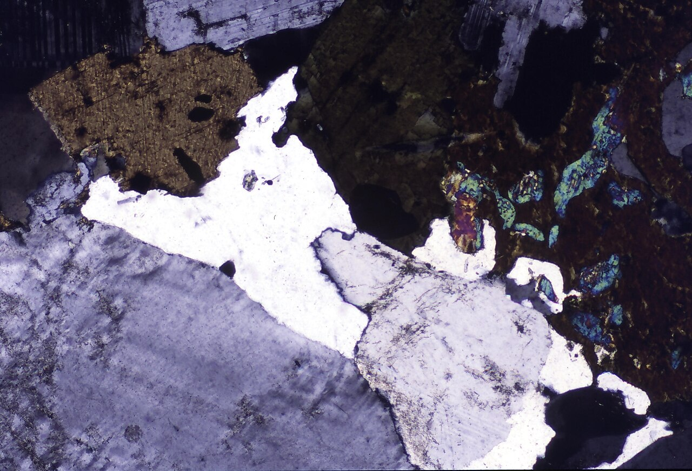
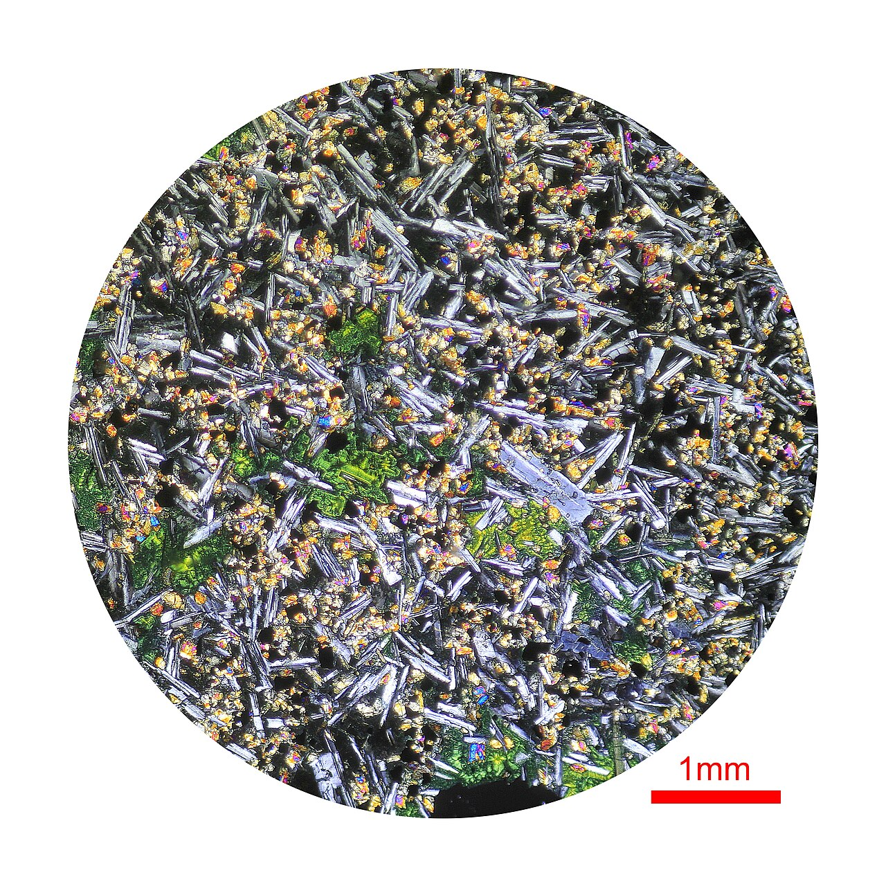

산꼭대기가 사라진 화산
교과서 p. 31학습 목표
- 암석의 순환 과정에서 화산 활동의 역할을 설명할 수 있다.
- 화산 활동으로 생성되는 암석의 특성을 추론할 수 있다.


하와이 화산과 달리 이렇게 격렬하게 분출한 까닭은 무엇일까?
조용히 분출하는 화산과 폭발적으로 분출하는 화산 영상을 차례로 보여 주고, 차이를 만드는 요인을 자유롭게 예상하게 합니다(예시: 마그마에 녹아 있는 기체의 양, 점성). 교과서 운영안은 3차시(암석의 순환·화산의 형태 / 편광 현미경과 화성암 조직 / 탐구)입니다.
2차시(100분) 수업 운영안
| 차시 | 단계 | 시간 | 활동 |
|---|---|---|---|
| 1차시 | 동기 유발 | 5분 | 한라산과 산방산 사진 비교, "같은 제주도인데 왜 모양이 다를까?" |
| 핵심 개념 1 | 17분 | 마그마의 정의와 세 종류, 점성을 정하는 요인, 암석의 순환 | |
| 핵심 개념 2 | 20분 | 순상·성층·종상 화산 비교, 화산 분출물(가스·용암·쇄설물) | |
| 정리 | 8분 | O/X ①·②, 우리나라 화산 지형 분류하기 | |
| 2차시 | 핵심 개념 3 | 20분 | 규산염 사면체와 결합 구조 → 편광 현미경 구조(개방·직교 니콜) → 광학적 성질 |
| 화성암의 조직 | 10분 | 냉각 속도와 조직 4가지, 화성암 분류표 완성 | |
| 탐구 활동 | 12분 | 박편 사진 관찰 → 화산암·심성암 판별 | |
| 형성 평가 | 8분 | 문항 풀이, 스스로 확인하기 |
암석의 순환과 화산 활동
교과서 p. 31(1) 화산 활동이란?
- 지하 깊은 곳에서 생긴 마그마는 주변 암석보다 밀도가 작아, 지각의 약한 부분이나 틈을 따라 올라와 깊이 수 km~수십 km에 마그마방을 만든다.
- 마그마방에서 휘발 성분이 늘어나 내부 압력이 높아지면 마그마가 지표로 분출한다.
- 화산 활동: 지하 깊은 곳에서 생성된 마그마가 지표로 분출하는 현상
(2) 암석의 순환 속 화산 활동의 역할
- 암석은 주변 환경이 바뀌면 끊임없이 다른 암석으로 변하며 순환한다.
- 화성암 → 퇴적암: 지표로 드러난 암석이 풍화·침식되어 운반·퇴적되고, 퇴적물이 속성 작용을 거쳐 퇴적암이 된다.
- → 변성암: 화성암이나 퇴적암이 변성 작용을 받으면 구성 광물과 조직이 변해 변성암이 된다.
- → 마그마 → 화성암: 암석이 높은 열을 받아 녹으면 마그마가 되고, 마그마가 식어 굳으면 다시 화성암이 된다.
- 화산 활동의 역할: 지구 내부의 물질을 지표로 올려 새로운 화성암을 만든다.
자세히 알아보기 ① 마그마의 세 가지 종류 심화 정리
- 마그마: 지하 깊은 곳에서 암석이 부분 용융되어 만들어진 액체 상태의 물질. 주성분은 SiO₂이고 O, Si, Al, Fe, Ca, Na, K, Mg 등을 포함하며, 기체와 암석 조각이 섞여 있기도 하다.
| 구분 | 현무암질 | 안산암질 | 유문암질 |
|---|---|---|---|
| SiO₂ 함량 | 약 52% 이하 | 약 52~63% | 약 63% 이상 |
| 온도 | 높다 (약 1000~1200 °C) | 중간 | 낮다 (약 800 °C 안팎) |
| 점성 / 유동성 | 작다 / 크다 | 중간 | 크다 / 작다 |
| 화산 가스 | 적다 | 중간 | 많다 |
| 많은 성분 | FeO, MgO, CaO | 중간 | SiO₂, Na₂O + K₂O |
| 주로 생기는 곳 | 해령, 열점 | 섭입대 | 대륙 지각이 녹거나, 다른 마그마가 분화된 곳 |
| 굳으면 | 현무암, 반려암 | 안산암, 섬록암 | 유문암, 화강암 |
• 점성은 마그마가 흐르지 않으려는 정도(끈적한 정도)이다.
• 온도가 낮을수록, SiO₂ 함량이 많을수록 점성이 커진다. SiO₂가 많으면 규산염 사면체끼리 연결된 구조가 많아져 잘 흐르지 못한다.
• 같은 종류의 마그마라도 온도가 내려가면 점성이 급격히 커진다.
• 점성이 큰 마그마는 가스가 빠져나가기 어려워 압력이 쌓이다가 폭발적으로 분출한다. 점성이 작으면 가스가 쉽게 빠져나가 조용히 흘러나온다.
자세히 알아보기 ② 화산 활동과 암석의 순환 심화 정리
- 마그마가 올라오는 까닭: 마그마는 주변 암석보다 밀도가 작아 위로 떠오른다. 올라오면서 압력이 낮아지면 녹아 있던 가스가 빠져나와 거품이 생기고, 지각의 약한 틈을 통해 분출한다.
- 화산 활동: 마그마가 지표로 나오며 용암, 화산 가스, 화산 쇄설물을 내보내는 현상
- 암석의 순환과 화산 활동
- 기존 암석(화성암·퇴적암·변성암)이 지하에서 녹아 마그마가 된다.
- 마그마가 식어 굳으면 새로운 화성암이 된다.
- 화성암이 풍화·침식되면 퇴적물이 되어 퇴적암으로, 높은 열과 압력을 받으면 변성암으로 바뀐다.
- 화산 활동은 지구 내부 물질을 지표로 꺼내는 통로이자, 기권과 수권에 기체를 공급하는 통로이다.
개념 확인 ① O/X
화산의 형태와 화산 분출물
교과서 p. 32(1) 마그마의 성질이 화산의 모습을 결정한다
- 점성: 마그마는 화학 조성과 온도에 따라 점성이 다르다. SiO₂ 함량이 적고 온도가 높을수록 점성은 작고 유동성은 크다.
- 기체: 마그마에는 수증기, 이산화 탄소, 이산화 황, 염화 수소 등이 녹아 있으며, 기체 함량이 많을수록 폭발적으로 분출한다.
- 순상 화산: 점성이 작고 유동성이 큰 마그마가 분출 → 경사가 완만한 방패 모양 (예: 마우나로아산)
- 성층 화산: 점성이 큰 마그마와 화산 쇄설물이 번갈아 분출 → 경사가 비교적 급하고 층상 구조 (예: 레이니어산)

(2) 화산 분출물
- 화산 분출물은 기체(화산 가스), 액체(용암), 고체(화산 쇄설물)로 나눈다. 마그마의 성질에 따라 분출되는 물질이 다르다.
- 화산 가스: 마그마가 지표 가까이 오면 압력이 줄어 녹아 있던 기체가 분리되어 나온다. 대부분 수증기이다.
- 용암: 마그마가 지표로 올라와 분출한 것
- 화산 쇄설물: 분출된 크고 작은 암석 조각. 기체가 많고 점성이 큰 마그마가 분출할 때 흔하며, 크기에 따라 나눈다.
| 화산 쇄설물 | 화산진 | 화산재 | 화산력 | 화산암괴 |
|---|---|---|---|---|
| 입자 크기 | 0.063 mm 이하 | 0.063 ~ 2 mm | 2 ~ 64 mm | 64 mm 이상 |
자세히 알아보기 ③ 화산체의 종류 비교 심화 정리
| 구분 | 순상 화산 | 성층 화산 | 종상 화산(용암돔) |
|---|---|---|---|
| 모양 | 경사가 완만한 방패 모양 | 경사가 급한 원뿔 모양 | 경사가 매우 급한 종 모양 |
| 마그마 | 현무암질 (SiO₂ 적음) | 안산암질·유문암질 | 점성이 매우 큰 마그마 |
| 분출 양상 | 조용히 흘러나옴 | 폭발적 분출과 용암 분출이 번갈아 | 용암이 흐르지 못하고 화구 위에 쌓임 |
| 구조 | 얇은 용암층이 넓게 겹침 | 용암층과 화산 쇄설물층이 번갈아 쌓임 | 굳은 용암 덩어리 |
| 예 | 한라산 산체, 하와이 마우나로아산 | 필리핀 마욘산, 일본 후지산, 미국 세인트헬렌스산 | 제주도 산방산 |
경사가 완만할수록 → 용암이 멀리 흘렀다 → 유동성이 컸다 → SiO₂가 적고 온도가 높은 현무암질 마그마
경사가 급할수록 → 용암이 멀리 못 갔다 → 점성이 컸다 → SiO₂가 많은 안산암질·유문암질 마그마
화산 쇄설물이 많을수록 → 가스가 많고 폭발적이었다
자세히 알아보기 ④ 화산 분출물 심화 정리
| 분출물 | 특징 |
|---|---|
| 화산 가스 | 마그마에서 빠져나온 기체. 대부분 수증기이고 이산화 탄소, 이산화 황, 황화 수소 등이 섞여 있다. |
| 용암 | 마그마가 지표로 나와 흐르는 액체. 현무암질 용암은 멀리 흐르고, 유문암질 용암은 거의 흐르지 못한다. |
| 화산 쇄설물 | 분출할 때 부서져 나온 고체 조각. 입자 크기에 따라 나눈다. |
| 화산 쇄설물 | 입자 크기 |
|---|---|
| 화산진 | 0.063 mm 이하 |
| 화산재 | 0.063 ~ 2 mm |
| 화산력 | 2 ~ 64 mm |
| 화산암괴 | 64 mm 이상 (공중에서 식으며 방추형이 된 것은 화산탄) |
개념 확인 ② O/X
편광 현미경으로 관찰한 화성암의 조직
교과서 p. 33, 35(1) 편광 현미경
- 화성암은 마그마의 냉각 속도에 따라 조직이 달라지며, 조직은 화성암을 분류하는 기준이 된다. 편광 현미경을 쓰면 조직을 자세히 관찰할 수 있다.
- 편광 현미경: 광물의 크기·모양·배열을 관찰하는 현미경으로, 한 방향으로 진동하는 빛만 통과시키는 편광판이 달려 있다.
- 하부 편광판: 회전 재물대 아래에 고정
- 상부 편광판: 경통에 넣거나 뺄 수 있음
- 개방 니콜: 상부 편광판을 뺀 상태 / 직교 니콜: 상부 편광판을 넣은 상태
- 관찰하려면 암석을 빛이 통과할 만큼 얇게 갈아 슬라이드 글라스에 붙인 박편을 만들어야 한다.
(2) 냉각 속도와 화성암의 조직
- 화산암 (지표 부근에서 빠르게 식음)
- 세립질 조직: 결정의 크기가 매우 작다.
- 유리질 조직: 결정이 거의 없다.
- 반상 조직: 세립질·유리질 바탕에 큰 결정(반정)이 박혀 있다. 지하에서 천천히 식던 마그마가 올라와 지표 부근에서 빠르게 식어 생긴다.
- 심성암 (지하 깊은 곳에서 천천히 식음)
- 조립질 조직: 결정의 크기가 크다.
- 즉, 조직을 보면 암석의 종류와 생성 환경을 알 수 있다.



자세히 알아보기 ⑤ 규산염 광물의 구조 심화 정리
- 규산염 광물: 규소(Si)와 산소(O)가 주성분인 광물. 지각과 맨틀 암석의 대부분을 차지한다.
- 규산염 사면체: 규소 1개를 산소 4개가 둘러싼 정사면체 구조로, 모든 규산염 광물의 기본 단위이다.
- 사면체끼리 산소를 얼마나 공유하느냐에 따라 구조와 성질이 달라진다.
| 결합 구조 | 대표 광물 | 특징 |
|---|---|---|
| 독립형 | 감람석 | 사면체가 따로 떨어져 있음. 현무암·반려암에 많음 |
| 단사슬 | 휘석 | 사면체가 한 줄로 이어짐 |
| 복사슬 | 각섬석 | 두 줄의 사슬이 나란히 연결 |
| 판상 | 흑운모, 백운모 | 평면으로 연결 → 얇은 판으로 잘 쪼개짐 |
| 망상 | 석영, 장석 | 모든 산소를 공유해 3차원 그물 구조. 유문암·화강암에 많음 |
• 현무암·반려암: 감람석, 휘석(Fe·Mg가 많은 어두운 광물)이 많다 → 색이 어둡고 밀도가 크다
• 유문암·화강암: 석영, 정장석(밝은 광물)이 많다 → 색이 밝고 밀도가 작다
• 안산암·섬록암: 중간 (사장석, 각섬석 등)
자세히 알아보기 ⑥ 편광 현미경과 광물의 광학적 성질 심화 정리
- 편광판: 여러 방향으로 진동하는 자연광 가운데 한 방향으로 진동하는 빛만 통과시킨다.
- 구조: 광원 → 하부 편광판(고정) → 회전 재물대 위의 박편 → 대물렌즈 → 상부 편광판(넣고 뺄 수 있음) → 접안렌즈
- 박편: 암석을 빛이 통과할 정도로 매우 얇게(약 0.03 mm) 갈아 유리에 붙인 것
| 구분 | 개방 니콜 | 직교 니콜 |
|---|---|---|
| 상부 편광판 | 뺀 상태 | 넣은 상태 (하부 편광판과 진동 방향이 직각) |
| 보이는 것 | 광물 고유의 색, 다색성 | 간섭색, 소광 |
| 성질 | 뜻 |
|---|---|
| 복굴절 | 광물을 지난 빛이 진동 방향이 서로 수직인 두 빛으로 갈라지는 현상 (방해석을 통해 보면 글씨가 두 개로 보임) |
| 다색성 | 개방 니콜에서 재물대를 돌리면 색이나 밝기가 바뀌는 현상 (흑운모, 각섬석 같은 유색 광물) |
| 간섭색 | 직교 니콜에서 복굴절로 갈라진 두 빛이 간섭해 여러 색이 보이는 현상 (감람석·휘석은 화려하고, 석영·장석은 흰색~회색) |
| 소광 | 직교 니콜에서 재물대를 돌리면 90°마다 어두워지는 현상 |
| 완전 소광 | 복굴절이 없는 광학적 등방체(암염, 형석, 화산 유리 등)는 직교 니콜에서 항상 어둡게 보임 |
자세히 알아보기 ⑦ 냉각 환경과 화성암의 분류 심화 정리
| 조직 | 냉각 조건 | 특징 |
|---|---|---|
| 유리질 | 지표에서 매우 빠르게 | 결정이 생기지 못해 유리처럼 보임 (흑요석) |
| 세립질 | 지표·지표 부근에서 빠르게 | 결정이 매우 작아 맨눈으로 구별하기 어려움 |
| 반상 | 지하에서 천천히 → 지표 부근에서 빠르게 | 큰 결정(반정)이 작은 결정·유리(석기) 속에 박혀 있음 |
| 조립질 | 지하 깊은 곳에서 천천히 | 결정이 크고 고르게 자라 맨눈으로 구별됨 |
| 생성 장소 \ SiO₂ | 적다 (염기성) | 중간 | 많다 (산성) |
|---|---|---|---|
| 화산암 (세립질·유리질) | 현무암 | 안산암 | 유문암 |
| 심성암 (조립질) | 반려암 | 섬록암 | 화강암 |
| 색과 밀도 | ← 어둡고 무거움 ······ 밝고 가벼움 → | ||
- 반심성암: 화산암과 심성암의 중간 깊이에서 굳은 암석. 주로 반상 조직이 보인다(석영 반암, 장석 반암 등).
개념 확인 ③ O/X
편광 현미경으로 화산암과 심성암의 조직 비교·관찰하기
교과서 p. 34탐구 · 현무암과 화강암 박편 관찰
목표 편광 현미경으로 화산암과 심성암의 조직을 관찰하고 비교할 수 있다.
준비물 편광 현미경, 현무암 박편, 화강암 박편
- 회전 재물대에 현무암 박편을 올려놓는다.
- 초점 조절 나사로 박편과 대물렌즈 사이 거리를 조절하며 초점을 맞춘다. 박편과 대물렌즈가 닿아 깨지지 않도록 눈으로 확인하며 조절한다.
- 상부 편광판을 뺀 상태(개방 니콜)로 현무암의 조직을 관찰한다.
- 상부 편광판을 넣은 상태(직교 니콜)로 현무암의 조직을 관찰한다.
- 같은 방법으로 화강암의 조직을 관찰한다.

결과 및 정리
1. 편광 현미경으로 관찰한 현무암과 화강암의 조직을 비교하여 설명해 보자.
2. 현무암과 화강암의 조직이 다른 까닭을 암석의 생성 환경과 관련지어 추론해 보자.
스스로 확인하기
1. 암석의 순환 과정에서 화산 활동은 어떤 역할을 하는가?
2. 화산암과 심성암의 조직이 다른 까닭은?
3. 창의력 더하기 · 백두산이 분화해 화산재가 우리나라로 날아온다면, 피해를 줄이는 방법은?
개념 확인 문제
그림 출처
사진은 Wikimedia Commons의 퍼블릭 도메인 또는 CC 라이선스 자료이며, 각 그림 아래에 저작자와 라이선스를 표시했습니다. 모식도와 시뮬레이션은 직접 만들었습니다. 화산 쇄설물의 크기 구분은 교과서 자료(지질환경과학, 2016)를 따랐습니다.